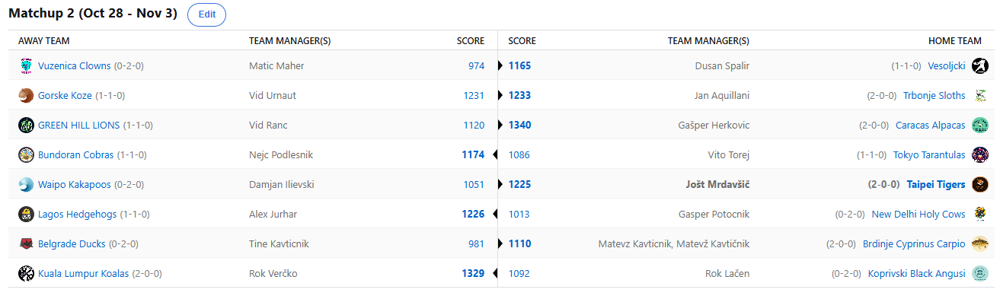

SEZONA 24/25
- Pravila in sistem tekmovanja
- Matchup1 (Oct 22 - Oct 27)
- Matchup2 (Oct 28 - Nov 3)
- Matchup3 (Nov 4 - Nov 10)
- Matchup4 (Nov 11 - Nov 17)
- Matchup5 (Nov 18 - Nov 24)
- Matchup6 (Nov 25 - Dec 1)
- Matchup7 (Dec 2 - Dec 8)
- Matchup8 (Dec 9 - Dec 15)
- Matchup9 (Dec 16 - Dec 22)
- Matchup10 (Dec 23 - Jan 29)
- Matchup11 (Dec 30 - Jan 5)
- Matchup12 (Jan 6 - Jan 12)
- Matchup13 (Jan 13 - Jan 19)
- Matchup14 (Jan 20 - Feb 26)
- Matchup15 (Jan 27 - Feb 2)
- Play-in (Feb 3 - Feb 23)
- Playoff 1 (Feb 24 - Mar 9)
- Playoff 2 (Mar 10 - Mar 23)
- Playoff 3 (Mar 24 - Apr 6)
2024/25 - Fantasy Koroška - sezona 8
MATCHUP 2 (Oct 28 - Nov 3)
Poročilo kroga
Zaključen je drugi teden in že imamo malo boljšo idejo katera moštva kotirajo visoko in komu je cilj izogniti se gajbi na pikniku.
V tem času »počitnic« smo videli zgolj en zanimiv matchup, medtem ko so bili večinoma vsi ostali odločeni že prej.
Najbolj pestro je bilo na dvoboju Kupsa in Urnauta. Pred zadnjima dvema tekmama tedna je bil rezultat POPOLNOMA PORAVNAN,
ostal je le še dvoboj Zacharija Risacherja in Klaya Thompsona 1 na 1. Če bi Vid vedel, kako je Risacher začel tekmo (9pts 4rbd 1stl v 5min)
bi ga najbrž poraz pekel še nekoliko bolj, tako da mu ne povedat (oh wait^-^) … Sredi prve četrtine je bil na 17 FPTS,
tekmo pa je zaključil na zavidljivih 22 :D V tem obračunu mladosti in izkušenj je Klay s težavo zbral 24 točk in sramežljivemu trashtalkerju Kupsu,
ki je na svoje prve zbadljive besede raje čakal na ponedeljek prinesel še drugo zmago. Precej smole za Vida,
Francoski štrankl mu namreč ni uspel prinesti zgodnjega rojstnodnevnega darila in moral bo počakali cel teden za morebitno tolažilno darilce v tretjem tednu.
Drvimo dalje in ustavili se bomo na vrhu trenutne lestvice, kjer predlanski zmagovalec Gašper Herkovič kraljuje s svojimi samooklicanimi »mightly« Alpakami.
Najboljši score tedna in s tem vodstvo v virtualnem izkupičku za denarno nagrado 10€ sta trenutno v Gašperjevih rokah toda težko je verjeti,
da bi tole zadoščalo tudi na nivoju sezone in Herko se bo moral še precej potruditi, če želi karkoli od trenutno sicer prijetnih rekordov in mest na lestvici,
ki jih drži, zadržati tudi na koncu. Če je bilo 23 točk prvega napadalca lige dovolj za tesno zmago nad OK Fužinarjem,
pa ni bilo 1120 točk dovolj niti za tesen poraz proti Alpakam. Vid Ranc je okusil grenkobo poraza in mnogi se že sprašujejo ali je bil prvi teden zgolj začetniška sreča?
V Akrapovič Headquartersih je skoraj takšna gužva kot pri Matevžu Kavtičniku na šihtu, a trenutni CEO Rok Lačen se spretno otepa vseh ostalih kandidatov za ta (nepreveč)laskavi naziv.
Tudi tokrat naš rejverček ni imel pravih možnosti in baje že zbira denar za plačance, da malo naučijo Samota kozjih molitvic ob zajebanem draftu.
V dvoboju Rokov je bil boljši Verčko, ki s svojimi Koalami tiho a zanesljivo zbira zmage in je kljub precej izostankom bil vse do zadnjega celo v igri za najboljši score tedna.
Mislim, da se je Rok svojega nekdanjega statusa »nikoli v top10« že davno otresel in čakamo flejme z njegove strani uperjene v Aleksa,
ki kar ni in ni mogel utihniti s to zbadljivko zoper Roka.
Ko smo ravno pri Aleksu, v obračunu mačke in miši je bil z lahkoto boljši od G€P$a. Izguba Bruca Browna, ki iz neznanih razlogov zaseda IR spot Chefu Curryju
je bila prevelik manjko za Svete Krave in drugi zaporedni poraz je tu. Gepsa najbrž tolaži dejstvo da mu tudi na draftu kruto ukradeni Banchero ne
bi pomagal kaj dosti in čakamo kdaj bodo v Indiji začeli iskati kakšno rešitev s pomočjo trejdov? Kaj reči za Ježke, ob tem walkoverju nismo uspeli prav razbrati,
ali se Aleksovi varovanci prebujajo ali ne, smo pa razbrali, da je Cody Williams steal tržnice prostih igralcev in oh kako nas peče,
da se zanj nismo bolj potrudili in finančno izprsili.
Prav poškodba Banchera pa je bila zadnji žebelj v krsto novozelandskih novincev in Jošt je imel prav,
ko je Kakapose vnaprej oklical za naslednjo ptico(slash sovo), ki proti Tigersom ne bo poletela.
Kar se Dilija tiče gotovo ne moremo govoriti o začetniški sreči, izguba tako Banchera kot tudi Dejounteja ob že draftanih poškodovancih Brogdonu in
Olynyku povzroča na IR spotih Kakaposov večjo gužvo kot Covid preplah pri stalaži za WC papir. Kaj reči na drugi strani za Joleta ..
nič kaj, another day at the office za managerja, ki še povečuje prednost na vrhu all-time H2H lestvice s kar 63% win ratom in kot da 2-0 štart še ni dovolj,
je za danes najavljen še povratek GOAT-a Paula Georga … sladke skrbi za LM-a. Pa lahko danes v Koroški ligi prizadane Diliju še drugi poraz?
Že smo pri vice-presidentu Akrapoviča, Matic Maher je potreboval točno 2 tedna, da je svoje Klovne pozicioniral na klasično lokacijo ….
tako v ligi kot tudi pri predictionih. Vuzeniški Klovni so bili v nedavni anketi STA-ja izglasovani celo za moštvo z najbolj accurate imenom,
kajti vsekakor so iz sezone v sezono deležni zasmehovanja. Matica smo ujeli v njegovem barbershopu, v ozadju pa se je vrtela tista znana popevka
»seasons come and go, but i will never change«, ki jo je kasneje sam nadaljeval z »i am so shiiiiiiiit«.
Tokrat je v slogu Rdečega Križa daroval zmago Dušanu Špalirju, ki jo je roko na srce tudi kar potreboval.
Ni namreč vajen porazov s tako rekoč popolnoma zdravo ekipo in že se ga je lotevala nervoza, tako da na tej točki v njegovem imenu zahvala Maticu za dobrodelnost,
Dušan pa obljublja, da Vesoljčki ne bodo dolgo edino moštvo brez 40+ average playerja, a skeptiki v to malo dvomimo, saj svoje upe namreč polaga v Jordana Poola in
predlagamo, da vpraša Lačna kaj na to temo.
Tretji v hudi konkurenci največjih nubacov in hkrati glavni gajba kandidat pa je kakopak čka Beogradska, Tine Kavtičnik.
Ko bi le lahko imeli sume, da mu je bratec Mato namaknil kak € v zameno za katastrofalno predstavo v tem tednu,
a ob pogledu na njegovo moštvo vidimo, da za kaj takega Matevž niti ni imel potrebe.
Razplet tega Brdinjskega El Classica je razviden če vsaj malo spremljate FB skupino, kjer namreč ne manjka memov sicer blazno zaposlenega Matevža in to je tudi edina
pozitivna lastnost da Krapi zmagujejo. Ob pogledu na njegov razpored, bi znali biti deležni gobcanja še vsaj kak teden.
Ampak saj veste kako pravijo … za vsako rit raste šiba.
Še zadnji dvoboj, ki je prav tako obetal zanimiv zaključek, a samo dokler Zion ni izvedel za SuperSunday v lokalnem McDonaldsu
in si vzel prosto ter s tem razblinil še zadnje upe o zmagi Tarantel.
Kaj imata skupnega Anthony Davis in Vito Torej se sprašujete? K sreči ne obrvi, pač pa sta si ta teden oba poskušala na pleča naložiti in pokerijati svoje moštvo,
vendar ne Vitovih 29 proti Calcitu, niti AD-jevih 165 proti Kobram ni bilo dovolj za zmago. Vsekakor pa upamo, da Kobre ne bodo po vzoru tistih pitonov na Floridi,
ki jedo vse od krav do hišnih ljubljenčkov začele strašiti po tej ligi, majhna tarantela še gre, toda že zdaj sledi pravi preizkus, ko jih čakajo prav krave!
Sledi že tretji teden … teden čudnega razporeda, danes namreč sledi vseh 15 tekem, kajti jutri je čas,
da neumni Američani ponovno izvolijo tudi svojega neumnega predsednika in zato tekem ne bo.
Kaj pa nas v ligi čaka tokrat? Nekaj trashtalka se vsekakor obeta v dvoboju Angusov in Ježkov, z zanimanjem bomo spremljali tudi obračun osmoljencev MUP2,
Vita in Urnauta, toda že davno davno so derbi kola napovedali Matterji s tistim znanim: »lev, tiger, tiger, lev«.
Srečno vsem, ne pozabite na predictione in kot bi rekel Pero Martić … neka grmi content!